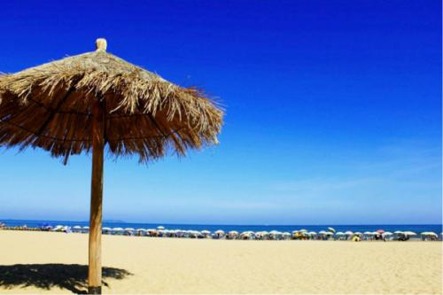

茂名童子湾
童子湾东侧是一片岩石，其中有一块大石屹立于水面，像鲤鱼，也像船帆。湾内风平浪静，这里则风大浪高，是观浪、听海、垂钓的好地方。
茂名乙烯厂,以炼油、乙烯生产为龙头的石油化工工业在全国占有重要位置，是广东省重要的能源、原材料和重化工业基地。拥有华南地区最大的原油加工能力，因此茂名有“中国南方油城”之称。
“希望之泉”城市雕塑，位于茂名市中心位置,建于2002年。三个分别代表工人、农民、知识分子的魁梧人像，齐齐托起希望之泉，为实现四个现代化而努力奋斗。
茂名南部临海，海岸线曲折多湾，迂回220多公里，滩长、林绿、水清是这里的资源特色。虎头山、中国第一滩等处沿海沙滩长达12公里，沙质洁白细软，坡度平缓，适宜开展海水浴、海上运动项目。

茂名市，广东省辖地级市，广东省域副中心城市，粤西组团式中心城市，
南中国美丽滨海城市，中国北部湾城市群规划重要节点城市。
茂名市位于广东省西南部，鉴江中游，东毗阳江，西临湛江，北连云浮和广西壮族自治区，南临南海。
全市陆地面积11427平方千米，约占广东省陆地面积的6.4%，海域面积75平方公里。
茂名市是广东省人口较多的地级市，户籍人口798.85万人（2016年）。
茂名市位于南中国海之滨，地处广东省西南部，背靠祖国大西南。据史载，茂名秦朝时分属象郡和南海郡，隋朝时设置茂名县。
1959年设立茂名市，1983年实行市管县体制，现辖茂南区和电白区，并代管高州市、化州市和信宜市。 茂名市享有部分地方立法权。
茂名市是广东省农业经济比较发达的城市，盛产水产品。
“三高农业”蓬勃发展，三华李、荔枝、香蕉、龙眼等“岭南佳果”驰名中外，
是中国水果生产基地，水产养殖享誉盛名，是“中国罗非鱼之都”。
茂名是粤东西北地区中经济实力较强的城市，GDP连续14年居粤东西北首位，
同时，茂名是中国华南地区最大的石化基地，为中国南方重要的石化生产出口基地和广东省的能源基地。
2015年11月，列为第二批国家新型城镇化综合试点地区。
2017年12月15日，荣膺中央电视台《魅力中国城》第一季魅力冠军城市 。